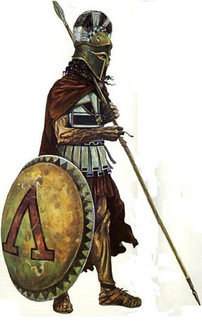
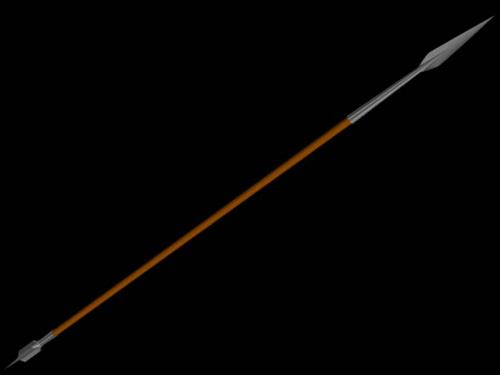
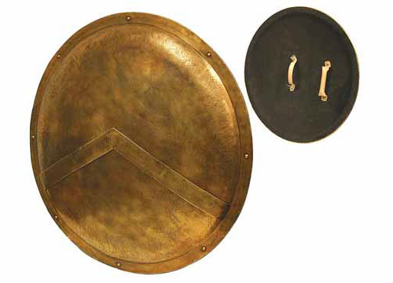

The Spartan weapons were a well-honed part of the ancient world's premier war machine. Sparta's elite warriors trained from a young age and unlike their contemporaries on the battle field, being a warrior was the only career they would ever know. In fact their whole society was geared towards warfare; every facet of their lives was aimed at increasing Spartan military power. With the weight of an entire society behind these warriors, and their entire weight behind the points of their weapons, it should come as no surprise that Spartan weapons were also some of the deadliest in the ancient world. Fighting in a phalanx spartan warriors presented their enemies with spear tips from densely packed rows. However, when two of these ponderous formations collided, spears were bound to break or be useless in the tight crush of battle, and this is when the two types of short swords came into play. The last weapon listed was for defense first and foremost, but even a shield was a Spartan weapon in the hands of these hardened warriors.
Each Spartan was expected to provide his own weapons and armor. Due to the large expense of good equipment the Spartans would frequently pass down weapons, armor and particularly shields within families. It would not be unusual for a man to go to battle equipped in his fathers and grandfathers, often even fighting on the same exact battlefields. This added even more weight to their commitment to fight, to drop your ancestral weapons and shield and run would be seen as a disgrace on multiple levels.

The Spartan's Primary Weapon: The Dory
The Spartan warriors primary weapon was a spear called a dory. Accounts of its length vary but it is typically believed to have been between 7 to 9 feet (2.1 - 2.7 meters) in length. The spear was held one handed, either over or underhand, perhaps depending on the situation, while the other arm was used to hold up the shield. At the business end there was a bronze or iron curved leaf shaped spearhead with a long, cylindrical socket in which the shaft was placed. Whether iron or bronze was more typical for a Spartan spear point remains an open question. The shaft itself was of cornel wood, selected due to the strength of this wood. Interestingly the wood from this tree is so dense that it actually sinks in water and the name of the tree became synonyms with spears in Greek poetry. Leather would then be wrapped tightly around were the Spartan gripped the spear, obviously for a better grip. The butt of the spear was capped with a butt spike called a sauroter, Greek for 'lizard killer'. This spike had several uses. It could be used to stand the spear up or used as a secondary weapon if the spearhead was broke off. Additionally, any enemies that had fallen could be dispatched by the warriors marching over them in the back ranks of the phalanx who were holding there spears in a vertical position. Of course the sauroter could be used to dispatch lizards as well! Sauroters could have been bronze or iron; perhaps the most typical spear featured an iron head and bronze sauroter.

Spartan Swords - Short & Deadly
Spartan hoplite warriors also carried a short sword called a xiphos. This secondary weapon would have been employed if the crush of battle rendered a hoplites spear useless or if it was broken. Among most Greek warriors this weapon had an iron blade of about two feet (.6 m), however the Spartan version was typically only 12-18 inches. The Spartans shorter weapon proved deadly in the crush caused by colliding phalanxes formations were it was capable of being thrust through gaps in the enemies shield walls and armor were there was no room for longer weapons. The groin and throat were favorite targets of the tenacious Spartans. In one account an Athenian asked a Spartan why his sword was so short and after a short pause he replied, "It's long enough to reach your heart."

The Kopis - The Nasty Spartan Weapon
As an alternative to the xiphos some Spartans selected the dreaded Kopis as their secondary weapon. This was a vicious hacking weapon in the form of a thick, curved iron sword. Warriors would use this weapon more as an axe then a sword, inflicting nasty wounds compared to the cleaner holes made by the spear and xiphos. This weapon was seen as the quintessential "bad guys" weapon in ancient Greece. Athenian art frequently depicted Spartan warriors with this weapon for that reason.

The Old Bashing Shield
The main purpose of the Spartan shield was defensive; however Spartans also used it to bash their opponents. This could be to stun them, knock them down or get some room to use another weapon. The shield could also be used as a killing weapon outright, its weight and thin edge making it a superb blunt weapon. The hoplite shield, or aspis (although it is commonly called a 'hoplon'), was heavy, weighing about 30 pounds. They were constructed out of wood with an outer layer of bronze. Due to its defensive nature, Spartans using it as a weapon could gain the advantage of surprise. Being clubbed to death by heavy shield may have even been more unpleasant then being hacked apart by a Kopis!